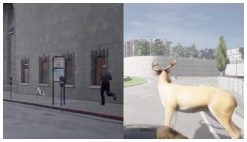
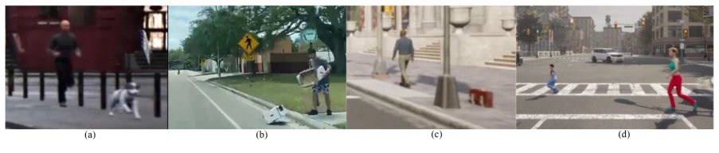
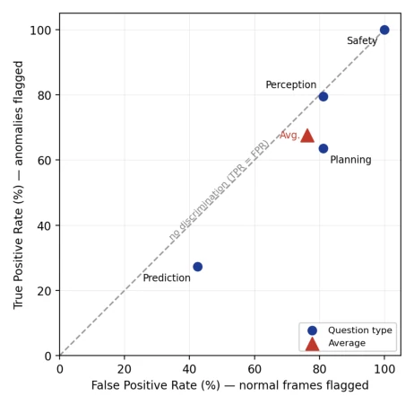

SENSE-VAD: Sentient and Semantic Video Anomaly Detection for Autonomous Driving
Nghia T. Nguyen, Lokman Bekit, Yasin Yilmaz abspdf
论文点评Review
这篇 SENSE-VAD 论文试图给自动驾驶的“社会性盲区”做个体检。作者很聪明，没去卷撞车检测，而是盯着“小孩乱跑”、“被绑架”、“狗脱绳”这种运动正常但关系异常的场景。虽然号称“首个”，但 ComplexVAD 其实也搞过交互，只是视角不同。最大的槽点是，这数据集全是 CARLA 生成的，真机落地能不能扛住 sim-to-real 的坑还得打个问号。不过，它确实狠狠打了现有 VAD 模型的脸：11 个 SOTA 方法全崩，连 VLM 都分不清正常走路和异常奔跑的区别。这证明现在的感知模型在“懂人情世故”这块还是瞎子，光靠运动统计根本不够用，必须引入社会关系推理。
This SENSE-VAD paper attempts to conduct a health check on the "social blind spots" of autonomous driving. The authors are smart; instead of competing in collision detection, they focus on scenarios like "children running around," "kidnapping," and "dogs off-leash," where motion is normal but relationships are abnormal. Although claimed as the "first," ComplexVAD has actually handled interactions before, just from a different perspective. The biggest drawback is that the dataset is entirely generated by CARLA; whether it can withstand the sim-to-real pitfalls in real-world deployment remains questionable. However, it indeed delivered a severe blow to existing VAD models: 11 SOTA methods all collapsed, even VLMs could not distinguish the difference between normal walking and abnormal running. This proves that current perception models are still blind in terms of "understanding social nuances"; relying solely on motion statistics is fundamentally insufficient, and social relationship reasoning must be introduced.
The long-tail safety challenges of autonomous driving often lie not in the obstacles themselves, but in human intent. The Waymo recall incident exposed this: the car recognizes the road, but cannot distinguish between "a child running towards the road" and "a child running away from the road." Existing datasets such as DADA [10], DoTA [52], and AnoVox [4] mostly focus on vehicle kinematics or accident outcomes, lacking annotations on social relationships between agents. Although ComplexVAD [29] involves interaction, its perspective is fixed surveillance, not in-vehicle perspective. SENSE-VAD aims to address this blind spot of "normal motion statistics but abnormal social relationships," such as a child being forcibly taken away; the motion trajectory itself is not strange, but the relationship is wrong. This is not just a detection problem, but a comprehension problem, requiring data to fill this cognitive gap.

Figure 1. Qualitative comparison between SENSE-VAD (left) and AnoVox [4] (right). SENSE-VAD captures socially-defined anomalies (e.g., a person chasing their dog and the path is not to- ward the road), whereas AnoVox focuses on single-object anoma- lies (e.g., an animal on the roadway).
The overall process is "simulation generation + real probe." Data generation used three CARLA versions (UE4/UE5), selecting engines for different scenarios; for example, dog off-leash uses UE5's animal skeletons, kidnapping uses 0.9.12's multi-agent AI. Annotation is frame-level binary labels, emphasizing "social abnormality onset." Normal data comes not only from CARLA pairs (behavior matched but no anomaly) but also introduces the DAVID dataset and real-world videos as sim-to-real probes. The core innovation lies in the taxonomy, dividing anomalies into 6 classes and 15 types, such as Child Safety, Group Behavior, etc., forcing the model to distinguish between motion statistics and social relationships. During testing, all baselines share the Video Swin-B backbone to control variables. In the data generation part, the authors used three versions of CARLA 0.9.12, 0.9.15, and 0.10.0, corresponding to different animation and agent control requirements. For example, scenarios involving complex multi-agent AI like "crowd chaos" use 0.9.12, while scenarios involving object-attached skeletons like "bag snatching" rely on 0.9.15's get_bones() API. For animal behavior, CARLA 0.10.0 of UE5 is selected to obtain more realistic skeletal motion. Scene construction adopts scripted CARLA or UE5 episodes, controlling agent placement, camera configuration, weather, and time, ensuring 1-5 video clips per anomaly type. The annotation protocol stipulates that the anomaly start frame is the first frame where the social abnormality condition is clearly established, such as a child's trajectory deviating from the guardian, with subsequent frames marked as anomalies. Normal video sources include CARLA-generated paired normal clips, 28 sequences from the DAVID dataset, and real-world collected clips, to prevent the model from overfitting simulator features. During the testing phase, all baseline models uniformly use the Video Swin-B extractor to exclude confusion caused by backbone network differences and ensure evaluation fairness.

Figure 2. Representative frames from the complex anomaly videos in SENSE-VAD.
11 SOTA methods were evaluated, covering semi-supervised, weak-supervised, unsupervised, and training-free VLM. The metric is frame-level AUC. The results were terrible; the highest NP-VAD was only 57.15%, most close to random guessing. The VLM probe (Qwen3-VL-4B-Instruct) showed that the model can see people (Perception TPR 81.2%), but cannot judge relationships (Safety issues all reported as anomalies, TPR/FPR both 100%). This proves the failure lies in social understanding rather than detection. The test set includes real videos, verifying sim-to-real generalization. This indicates that relying solely on visual features or language priors cannot solve such problems; explicit training for social relationships is required.

Figure 3. VLM anomaly flagging on SENSE-VAD (true positive rate vs. false positive rate) for Qwen3-VL-4B-Instruct. All Driv- eLM question types lie on or below the no-discrimination diago- nal, indicating no meaningful anomaly discrimination. The safety question always predicts an anomaly.